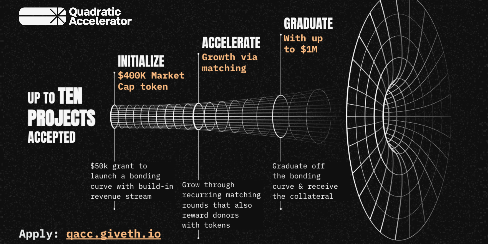

Q/ACC: Call for Applications
Originally published at https://paragraph.com/@qacc/q-acc-call-for-applications

The day has arrived. The q/acc protocol is now accepting applications for our first cohort of projects building on Polygon. This is your chance to fast-track the tokenization of your project with the most bleeding-edge methodology. The timeline:
-
PRIORITY review for projects that apply by Friday, Aug 30th
-
Applications close on Friday, Sept 6
-
The first cohort will be selected and onboarded in September
Don’t delay, apply today.
https://x.com/0xPolygon/status/1824064749052780987
What is q/acc?
Quadratic Acceleration (q/acc) combines the strengths of Quadratic Funding (QF) with those of Augmented Bonding Curves (ABC) to create a new mechanism for launching tokens with built-in liquidity, a passive revenue stream, and a clear path to community growth.
The q/acc program is a unique 10-week program that provides accepted projects with:
-
A $50K grant to tokenize your project via an Augmented Bonding Curve (ABC).
-
A season’s end q/acc round with a $100K matching pool to boost your token liquidity and participation on all future q/acc rounds.
-
The ability to offer your community reward tokens in exchange for their support.
-
Exclusive value-add packages from our preferred partners.
-
A clear path to graduating from q/acc with a large (up to $1M) pool of funds once you reach key indicators.
Project Qualifications
Is your project a good candidate for the q/acc program?
Are you:
-
A web3 founder with a pre-token project you’re building on Polygon?
-
Experienced team with a solid track record of experience?
-
Project with a clear roadmap, MVP, and runway for ~6 months or more?
How does the q/acc program work?
The 10-week program is evenly split across two modules:
-
The first part is all about tokenizing your project and inviting key contributors to acquire your tokens and access to your project team early.
-
The second part is about inviting your whole community and the larger ecosystem to acquire your project’s tokens through QF-styled matching rounds. The community will receive tokens as a reward for their contributions. It is also about building secondary market liquidity in preparation for the eventual graduation out of the bonding curve.

Visit our Knowledge Hub for our FAQ and more information about q/acc and the Quadratic Accelerator.
Originally published on Quadratic Accelerator